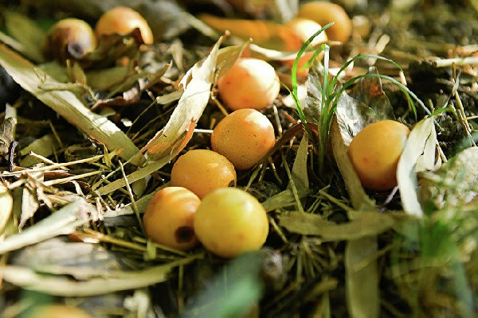

Lime
BAMBOO
Bamboo is the fastest growingevergreen growth on earth.Refers to grassy plants.
Bamboo consists of a section along whichjuice flows. At the top, bamboo is dividedinto branches on which nutritious leavesgrow. Bamboo refers to cereal plants.
Bamboo has a common root from whicha new life sprouts. The leaves are scaly,and are great food for pandas. The stem or straw can reach a height of 15 meters.
Bamboo becomes ripe after 7 years.About once every 50 years, the phenomenonof "bamboo death" occurs. This is periudwhen the bamboo forest blooms.The bamboo fruit contains substances thatdrive rodents crazy eat them, and after thatthey destroy all crops in thevillages of China.
Interesting facts about bamboo:(1) Bamboo can grow per day from 0.7 meters to 1.2 meters.(2) Bamboo blooms about once every 70 or even 120 years.(3) Bamboo fibers do not transmit ultraviolet radiation.

Author: Lime|DF
My Mail: dima3lime3lemon3@gmail.com